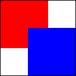

A link to a text file
.

Example image: red and blue rectangles in a black border.
Play the sound
Example audio: five seconds of silence.
Example video: solid red background and five seconds of silence.